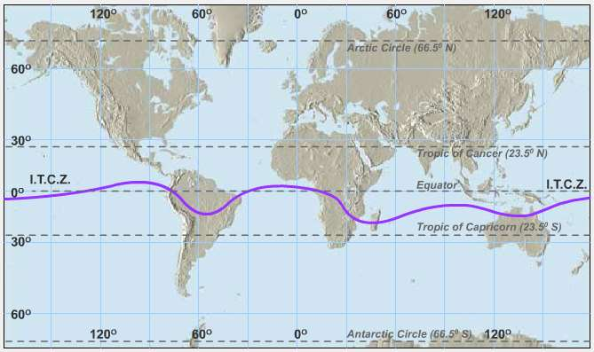

Quarter 4 Lesson 2
Tropical Cyclones
Tropical cyclones, also known as hurricanes or typhoons depending on the location, are powerful storms that form over tropical or subtropical ocean waters. They are characterized by a low-pressure center, strong winds, and heavy rain.
Tropical cyclones form when warm, moist air over the ocean rises and cools, causing water vapor to condense and form clouds. As the warm air continues to rise, it creates an area of low pressure at the surface, which draws in more warm, moist air from surrounding areas. This process continues and intensifies as the cyclone moves across the ocean.
Tropical cyclones are classified based on their wind speeds using the Saffir-Simpson Hurricane Wind Scale. The scale ranges from Category 1 (winds of 74-95 mph) to Category 5 (winds over 157 mph), with each category indicating increasing wind speeds and potential for damage.
Tropical cyclones can have significant impacts on human populations and infrastructure, including strong winds, heavy rain, storm surge, and flooding. Governments and emergency response agencies monitor tropical cyclones closely and issue warnings and evacuation orders to protect people and property.
where tropical cyclones located
Tropical cyclones typically originate in warm ocean waters near the equator, specifically in the tropical regions of the Atlantic, Pacific, and Indian Oceans. These areas are characterized by warm sea surface temperatures, high humidity, and weak vertical wind shear. The warm ocean waters provide the energy necessary to fuel the development of the cyclone, while the weak vertical wind shear allows the system to maintain its organization and intensify. As the cyclone develops, it may move across the ocean and potentially impact nearby coastal areas.
interopical Convergence zone

formation and development of Typhoon

Typhoons can be highly unpredictable, and their intensity, trajectory, and impact can vary greatly. It's essential to stay informed and heed official warnings and evacuation orders to stay safe during a typhoon.Typhoons are tropical cyclones that occur in the western Pacific Ocean, particularly in the northwestern Pacific region. The formation and development of typhoons follow a similar process as that of other tropical cyclones. Here are the general steps of how typhoons form and develop.
- Warm ocean waters: Typhoons require warm ocean waters to form and develop. The water temperature must be at least 26°C (79°F) to provide the energy needed to fuel the storm.
- Low pressure: A low-pressure system or disturbance over the ocean can trigger the formation of a typhoon. The low-pressure area can be caused by several factors, including the convergence of different air masses or the presence of a tropical wave.
- Rotation: As air converges toward the low-pressure area, the Coriolis effect causes the air to rotate counterclockwise in the Northern Hemisphere and clockwise in the Southern Hemisphere. This rotation sets the stage for the formation of a typhoon.
- Development: As the low-pressure system continues to draw in warm, moist air from the ocean, the rising air cools and condenses, releasing latent heat and further fueling the storm. The system can then develop into a tropical depression, then a tropical storm, and eventually a typhoon.
- Intensification: As the typhoon moves over warm ocean waters and encounters favorable atmospheric conditions, such as low wind shear and high humidity, it can intensify, with wind speeds increasing and the storm becoming more organized.
- Eye formation: As the typhoon intensifies, an eye may form at the center of the storm. This area is characterized by calm winds and clear skies, surrounded by the eyewall where the strongest winds and heaviest rainfall occur.
- Landfall and dissipation: Eventually, a typhoon may make landfall, causing significant damage and loss of life. Once over land, the storm can weaken and dissipate as it loses its source of warm ocean water.
Summary
Tropical cyclones are powerful storms with rotating winds and low pressure that form over warm ocean waters. They are classified based on their wind speeds and known by different names depending on the region. Tropical cyclones can cause significant damage and destruction when they make landfall, with impacts including high winds, storm surges, heavy rainfall, and flooding.